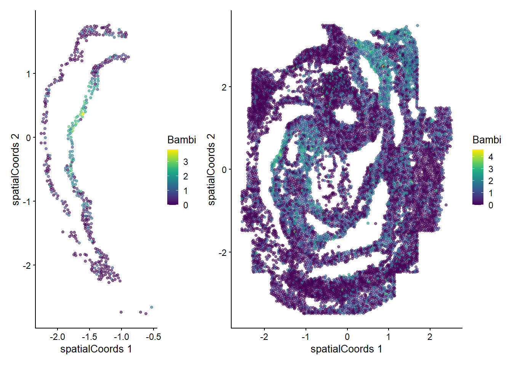

suppressPackageStartupMessages({
# Data packages
library(STexampleData)
library(imcdatasets)
# Packages from scdney
library(scHOT)
# Extra packages needed for workshop
library(ggplot2)
library(scater)
library(scuttle)
library(batchelor)
library(patchwork)
library(plotly)
library(RColorBrewer)
})
# We can use the following to increase computational speed.
# If you feel confident in the amount of CPU cores and/or memory that you have
# access to, feel free to increase nCores.
nCores <- 1
BPPARAM <- simpleSeg:::generateBPParam(nCores)
# The following will improve the aesthetics of some of the plots that we will
# generate.
theme_set(theme_classic())
source("celltype_colours.R")Early mouse organogenesis
Introduction
In the following we will conductor an analysis of Lohoff et al’s study of early mouse organogenesis that was performed using a seqFISH. This analysis was adapted from a workshop that Shila and Ellis deliver as an introduction to spatial data analysis.
Loading R packages and setting parameters
Part 1: Data structures and exploratory data analysis
Here we will download the dataset, examine the structure and perform some exploratory analyses. We will use a subset of data that is made available from the STExampleData package. Downloading this might take a few moments and you may be prompted to install some additional packages.
Here we download the seqFISH mouse embryo data. This is a SpatialExperiment object, which extends the SingleCellExperiment object.
spe <- STexampleData::seqFISH_mouseEmbryo()see ?STexampleData and browseVignettes('STexampleData') for documentationloading from cacheLoading required package: BumpyMatrixspeclass: SpatialExperiment
dim: 351 11026
metadata(0):
assays(2): counts molecules
rownames(351): Abcc4 Acp5 ... Zfp57 Zic3
rowData names(1): gene_name
colnames(11026): embryo1_Pos0_cell10_z2 embryo1_Pos0_cell100_z2 ...
embryo1_Pos28_cell97_z2 embryo1_Pos28_cell98_z2
colData names(14): cell_id embryo ... segmentation_vertices sample_id
reducedDimNames(0):
mainExpName: NULL
altExpNames(0):
spatialCoords names(2) : x y
imgData names(0):We can use functions designed for SingleCellExperiment objects in the scater package for plotting via the reducedDim slot. We multiply the spatial coordinates by a matrix to flip the y-axis and ensure we fix the aspect ratio.
spe <- logNormCounts(spe)
coord_transform <- matrix(c(1,0,0,-1), 2, 2, byrow = TRUE)
reducedDim(spe, "spatialCoords") <- spatialCoords(spe) %*% coord_transform
plotReducedDim(spe, "spatialCoords", colour_by = c("Sox2"), point_size = 1) +
coord_fixed()Questions
- How many cells are in this data?
- How many genes?
- Plot gene expression mapping point size to the cell area.
# try to answer the above question using the spe object.
# you may want to check the SingleCellExperiment vignette.
# https://bioconductor.org/packages/3.17/bioc/vignettes/SingleCellExperiment/inst/doc/intro.htmlWe can perform a typical gene-expression based analysis for this data. Later in part two we will perform some specific analytical techniques, but for now let’s explore the dataset and use methods designed for single cell data.
Dimensionality reduction using PCA, batch correction across tiles using the batchelor package, followed by UMAP and plotting.
spe <- runPCA(spe)
b.out <- batchelor::batchCorrect(spe, batch = spe$pos, assay.type = "logcounts", PARAM=FastMnnParam(d=20))
reducedDim(spe, "FastMnn") <- reducedDim(b.out, "corrected")
spe <- runUMAP(spe, dimred = "FastMnn")
speclass: SpatialExperiment
dim: 351 11026
metadata(0):
assays(3): counts molecules logcounts
rownames(351): Abcc4 Acp5 ... Zfp57 Zic3
rowData names(1): gene_name
colnames(11026): embryo1_Pos0_cell10_z2 embryo1_Pos0_cell100_z2 ...
embryo1_Pos28_cell97_z2 embryo1_Pos28_cell98_z2
colData names(15): cell_id embryo ... sample_id sizeFactor
reducedDimNames(4): spatialCoords PCA FastMnn UMAP
mainExpName: NULL
altExpNames(0):
spatialCoords names(2) : x y
imgData names(1): sample_idg_celltype_umap <- plotReducedDim(spe, "UMAP", colour_by = "celltype_mapped_refined") +
scale_colour_manual(values = celltype_colours)Scale for colour is already present.
Adding another scale for colour, which will replace the existing scale.g_celltype_umapplotReducedDim(spe, "UMAP", colour_by = "Sox2")g_celltype_spatial <- plotReducedDim(spe, "spatialCoords", colour_by = "celltype_mapped_refined") +
scale_colour_manual(values = celltype_colours) +
coord_fixed()Scale for colour is already present.
Adding another scale for colour, which will replace the existing scale.g_all <- g_celltype_spatial + theme(legend.position = "none") + g_celltype_umap
g_allAdvanced/Extension Question
- What considerations need to be made for batch correction of spatial data? What assumptions are being made and/or broken? How could you check this?
- Check out the
ggiraphpackage for extending theg_allobject to an interactive plot with a tooltip that links the spatial and UMAP coordinate systems. (Hint: This may involve generating a new ggplot object outside of theplotReducedDimfunction.)
# try to examine answer the above questions using the spe object.
# you may want to set up some small simulation..Part 2: scHOT analysis of the developing brain
Here we will ask which gene patterns we observe to be changing across the spe$gutRegion cell type in space. Note that we want to assess the anatomical region corresponding to the anterior end of the developing gut developing brain so we will first subset the cells using the spatial coordinates. We can check what we have selected by plotting.
spe$gutRegion <- spe$celltype_mapped_refined == "Gut tube" &
reducedDim(spe, "spatialCoords")[,1] < -0.5
plotReducedDim(spe, "spatialCoords", colour_by = "gutRegion") +
coord_fixed() +
scale_colour_manual(values = c("TRUE" = "red", "FALSE" = "grey"))Scale for colour is already present.
Adding another scale for colour, which will replace the existing scale.Let’s subset the data to only these cells and continue with our scHOT analysis.
spe_gut <- spe[,spe$gutRegion]
spe_gutclass: SpatialExperiment
dim: 351 472
metadata(0):
assays(3): counts molecules logcounts
rownames(351): Abcc4 Acp5 ... Zfp57 Zic3
rowData names(1): gene_name
colnames(472): embryo1_Pos3_cell377_z2 embryo1_Pos3_cell388_z2 ...
embryo1_Pos27_cell74_z2 embryo1_Pos28_cell373_z2
colData names(16): cell_id embryo ... sizeFactor gutRegion
reducedDimNames(4): spatialCoords PCA FastMnn UMAP
mainExpName: NULL
altExpNames(0):
spatialCoords names(2) : x y
imgData names(1): sample_idWe select genes with at least some proportion of expressed cells for testing, and create the scHOT object.
gene_to_test <- as.matrix(c(rownames(spe_gut[rowMeans(counts(spe_gut)>0) > 0.2,])))
length(gene_to_test)[1] 165 [,1]
Acvr1 "Acvr1"
Acvr2a "Acvr2a"
Ahnak "Ahnak"
Akr1c19 "Akr1c19"
Aldh1a2 "Aldh1a2"
Aldh2 "Aldh2" scHOT_spatial <- scHOT_buildFromSCE(spe_gut,
assayName = "logcounts",
positionType = "spatial",
positionColData = c("x_global_affine", "y_global_affine"))
scHOT_spatialclass: scHOT
dim: 351 472
metadata(0):
assays(1): expression
rownames(351): Abcc4 Acp5 ... Zfp57 Zic3
rowData names(0):
colnames(472): embryo1_Pos3_cell377_z2 embryo1_Pos3_cell388_z2 ...
embryo1_Pos27_cell74_z2 embryo1_Pos28_cell373_z2
colData names(16): cell_id embryo ... sizeFactor gutRegion
reducedDimNames(0):
mainExpName: NULL
altExpNames(0):
testingScaffold dim: 0 0
weightMatrix dim: 0 0
scHOT_output colnames (0):
param names (0):
position type: spatial We now add the testing scaffold to the scHOT object, and set the local weight matrix for testing, with a choice of span of 0.1 (the proportion of cells to weight around each cell). We can speed up computation by not requiring the weight matrix correspond to every individual cell, but instead a random selection among all the cells using the thin function.
scHOT_spatial <- scHOT_addTestingScaffold(scHOT_spatial, gene_to_test)
head(scHOT_spatial@testingScaffold) gene_1
Acvr1 "Acvr1"
Acvr2a "Acvr2a"
Ahnak "Ahnak"
Akr1c19 "Akr1c19"
Aldh1a2 "Aldh1a2"
Aldh2 "Aldh2" scHOT_spatial <- scHOT_setWeightMatrix(scHOT_spatial, span = 0.2)weightMatrix not provided, generating one using parameter settings...scHOT_spatial@weightMatrix <- thin(scHOT_spatial@weightMatrix, n = 50)
dim(slot(scHOT_spatial, "weightMatrix"))[1] 53 472For a given cell we can visually examine the local weight given by the span parameter.
cellID = 10
df <- cbind(as.data.frame(colData(scHOT_spatial)),
W = slot(scHOT_spatial, "weightMatrix")[cellID,])
ggplot(df,
aes(x = x_global_affine, y = -y_global_affine)) +
geom_point(aes(colour = W, size = W)) +
scale_colour_gradient(low = "black", high = "purple") +
scale_size_continuous(range = c(0.5,2.5)) +
theme_classic() +
guides(colour = guide_legend(title = "Spatial Weight"),
size = guide_legend(title = "Spatial Weight")) +
ggtitle(paste0("Central cell: ", cellID)) +
coord_fixed() +
NULLQuestion
- How will the results change if the span is increased/decreased?
## Make associated changes to the code to test out the question above.We set the higher order function as the weighted mean function, and then calculate the observed higher order test statistics. This may take around 10 seconds.
scHOT_spatial <- scHOT_calculateGlobalHigherOrderFunction(
scHOT_spatial,
higherOrderFunction = weightedMean,
higherOrderFunctionType = "weighted")higherOrderFunctionType given will replace any stored paramhigherOrderFunction given will replace any stored paramslot(scHOT_spatial, "scHOT_output")DataFrame with 165 rows and 2 columns
gene_1 globalHigherOrderFunction
<character> <matrix>
Acvr1 Acvr1 0.216666
Acvr2a Acvr2a 0.375776
Ahnak Ahnak 0.976418
Akr1c19 Akr1c19 0.744070
Aldh1a2 Aldh1a2 0.245981
... ... ...
Wnt5a Wnt5a 0.335820
Wnt5b Wnt5b 0.220300
Xist Xist 1.162241
Zfp444 Zfp444 0.744082
Zfp57 Zfp57 0.595519scHOT_spatial <- scHOT_calculateHigherOrderTestStatistics(
scHOT_spatial, na.rm = TRUE)higherOrderSummaryFunction will replace any stored paramNow we can plot the overall mean versus the scHOT statistic to observe any relationship. Labels can be interactively visualised using ggplotly. Some genes may have different distributions so we turn to permutation testing to assess statistical significance.
g <- ggplot(as.data.frame(scHOT_spatial@scHOT_output),
aes(x = globalHigherOrderFunction, y = higherOrderStatistic, label = gene_1)) +
xlab("Mean across all cells") +
ylab("scHOT statistic for local weightedMean") +
geom_point()
gggplotly(g)Set up the permutation testing schema. For the purposes of this workshop we set a low number of permutations over a low number of genes in the testing scaffold, you may want to change this as you work through the workshop yourself. The testing will take a few minutes to run, here with the parallel parameters that were set at the beginning of this document.
scHOT_spatial <- scHOT_setPermutationScaffold(scHOT_spatial,
numberPermutations = 50,
numberScaffold = 30)
scHOT_spatial <- scHOT_performPermutationTest(
scHOT_spatial,
verbose = TRUE,
parallel = FALSE)Permutation testing combination 40 of 165...
Permutation testing combination 150 of 165...slot(scHOT_spatial, "scHOT_output")DataFrame with 165 rows and 9 columns
gene_1 globalHigherOrderFunction higherOrderSequence
<character> <matrix> <NumericList>
Acvr1 Acvr1 0.216666 0.251205,0.275076,0.286668,...
Acvr2a Acvr2a 0.375776 0.398236,0.376223,0.361763,...
Ahnak Ahnak 0.976418 1.23931,1.22101,1.19278,...
Akr1c19 Akr1c19 0.744070 0.681732,0.622183,0.625407,...
Aldh1a2 Aldh1a2 0.245981 0.117491,0.118105,0.121221,...
... ... ... ...
Wnt5a Wnt5a 0.335820 0.282418,0.280240,0.268180,...
Wnt5b Wnt5b 0.220300 0.262440,0.321449,0.368172,...
Xist Xist 1.162241 1.18893,1.17123,1.18238,...
Zfp444 Zfp444 0.744082 0.529888,0.531771,0.538540,...
Zfp57 Zfp57 0.595519 0.853046,0.844188,0.838651,...
higherOrderStatistic numberPermutations storePermutations
<numeric> <numeric> <logical>
Acvr1 0.0750954 0 TRUE
Acvr2a 0.0665143 0 TRUE
Ahnak 0.3319897 0 TRUE
Akr1c19 0.1673342 0 TRUE
Aldh1a2 0.1827836 0 TRUE
... ... ... ...
Wnt5a 0.172300 0 TRUE
Wnt5b 0.104924 50 TRUE
Xist 0.120828 0 TRUE
Zfp444 0.118930 0 TRUE
Zfp57 0.130128 0 TRUE
permutations pvalPermutations FDRPermutations
<NumericList> <numeric> <numeric>
Acvr1 NA NA NA
Acvr2a NA NA NA
Ahnak NA NA NA
Akr1c19 NA NA NA
Aldh1a2 NA NA NA
... ... ... ...
Wnt5a NA NA NA
Wnt5b 0.0341284,0.0510860,0.0503153,... 0.0196078 0.0231579
Xist NA NA NA
Zfp444 NA NA NA
Zfp57 NA NA NAAfter the permutation test we can estimate the P-values across all genes.
scHOT_plotPermutationDistributions(scHOT_spatial)Warning: Use of `permstatsDF$globalHigherOrderFunction` is discouraged.
ℹ Use `globalHigherOrderFunction` instead.Warning: Use of `permstatsDF$stat` is discouraged.
ℹ Use `stat` instead.Warning: Removed 143 rows containing missing values (`geom_scattermore()`).scHOT_spatial <- scHOT_estimatePvalues(scHOT_spatial,
nperm_estimate = 100,
maxDist = 0.1)no permutations found within given maxDist... using all permutations instead
no permutations found within given maxDist... using all permutations instead
no permutations found within given maxDist... using all permutations instead
no permutations found within given maxDist... using all permutations instead
no permutations found within given maxDist... using all permutations instead
no permutations found within given maxDist... using all permutations instead
no permutations found within given maxDist... using all permutations instead
no permutations found within given maxDist... using all permutations instead
no permutations found within given maxDist... using all permutations instead
no permutations found within given maxDist... using all permutations instead
no permutations found within given maxDist... using all permutations instead
no permutations found within given maxDist... using all permutations instead
no permutations found within given maxDist... using all permutations instead
no permutations found within given maxDist... using all permutations instead
no permutations found within given maxDist... using all permutations instead
no permutations found within given maxDist... using all permutations instead
no permutations found within given maxDist... using all permutations instead
no permutations found within given maxDist... using all permutations instead
no permutations found within given maxDist... using all permutations instead
no permutations found within given maxDist... using all permutations insteadslot(scHOT_spatial, "scHOT_output")DataFrame with 165 rows and 14 columns
gene_1 globalHigherOrderFunction higherOrderSequence
<character> <matrix> <NumericList>
Acvr1 Acvr1 0.216666 0.251205,0.275076,0.286668,...
Acvr2a Acvr2a 0.375776 0.398236,0.376223,0.361763,...
Ahnak Ahnak 0.976418 1.23931,1.22101,1.19278,...
Akr1c19 Akr1c19 0.744070 0.681732,0.622183,0.625407,...
Aldh1a2 Aldh1a2 0.245981 0.117491,0.118105,0.121221,...
... ... ... ...
Wnt5a Wnt5a 0.335820 0.282418,0.280240,0.268180,...
Wnt5b Wnt5b 0.220300 0.262440,0.321449,0.368172,...
Xist Xist 1.162241 1.18893,1.17123,1.18238,...
Zfp444 Zfp444 0.744082 0.529888,0.531771,0.538540,...
Zfp57 Zfp57 0.595519 0.853046,0.844188,0.838651,...
higherOrderStatistic numberPermutations storePermutations
<numeric> <numeric> <logical>
Acvr1 0.0750954 0 TRUE
Acvr2a 0.0665143 0 TRUE
Ahnak 0.3319897 0 TRUE
Akr1c19 0.1673342 0 TRUE
Aldh1a2 0.1827836 0 TRUE
... ... ... ...
Wnt5a 0.172300 0 TRUE
Wnt5b 0.104924 50 TRUE
Xist 0.120828 0 TRUE
Zfp444 0.118930 0 TRUE
Zfp57 0.130128 0 TRUE
permutations pvalPermutations FDRPermutations
<NumericList> <numeric> <numeric>
Acvr1 NA NA NA
Acvr2a NA NA NA
Ahnak NA NA NA
Akr1c19 NA NA NA
Aldh1a2 NA NA NA
... ... ... ...
Wnt5a NA NA NA
Wnt5b 0.0341284,0.0510860,0.0503153,... 0.0196078 0.0231579
Xist NA NA NA
Zfp444 NA NA NA
Zfp57 NA NA NA
numberPermutationsEstimated globalLowerRangeEstimated
<integer> <numeric>
Acvr1 200 0.220300
Acvr2a 100 0.286168
Ahnak 1100 0.220300
Akr1c19 1100 0.220300
Aldh1a2 200 0.220300
... ... ...
Wnt5a 150 0.270287
Wnt5b 200 0.220300
Xist 50 1.184256
Zfp444 1100 0.220300
Zfp57 50 0.507166
globalUpperRangeEstimated pvalEstimated FDREstimated
<numeric> <numeric> <numeric>
Acvr1 0.29890 0.100000000 0.1269231
Acvr2a 0.29890 0.290000000 0.3190000
Ahnak 3.17142 0.000908265 0.0149864
Akr1c19 3.17142 0.016363636 0.0272727
Aldh1a2 0.29890 0.004975124 0.0183333
... ... ... ...
Wnt5a 0.298900 0.00662252 0.0183333
Wnt5b 0.298900 0.00497512 0.0183333
Xist 1.184256 0.14000000 0.1673913
Zfp444 3.171420 0.18727273 0.2145833
Zfp57 0.507166 0.01960784 0.0272727We can now examine the spatial expression of the 5 most significant genes, both in our scHOT object and over our original spe object.
output_sorted <- slot(scHOT_spatial, "scHOT_output")[order(slot(scHOT_spatial,
"scHOT_output")$pvalEstimated),]
topgenes <- rownames(output_sorted)[1:5]
reducedDim(scHOT_spatial, "spatialCoords") <- reducedDim(spe, "spatialCoords")[colnames(scHOT_spatial),]
for (topgene in topgenes) {
g_spe <- plotReducedDim(spe, "spatialCoords", colour_by = c(topgene), point_size = 1) +
coord_fixed()
g_scHOT <- plotReducedDim(scHOT_spatial, "spatialCoords", colour_by = c(topgene), point_size = 1,
by_exprs_values = "expression") +
coord_fixed()
g_all <- g_scHOT + g_spe
print(g_all)
}
Here we are noting the genes that are found to have the most statistically significant spatial variation in their local mean expression. These genes point to specific patterns that govern the development of individual parts of the gut tube.
Advanced/Extended Questions
- How would you perform such testing over multiple distinct samples?
- scHOT is developed with all higher order testing in mind, use the associated vignette to get towards assessing changes in variation or correlation structure in space.
## try some code